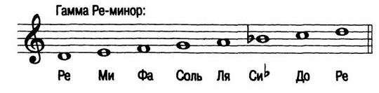

Урок 23. Гамма Фа-мажор, гамма Ре-минор.
Теория
Гамма Фа-мажор — это мажорная гамма, в которой главная нота (тоника) — Фа. В этой гамме есть один бемоль — Си♭.
- Ноты гаммы Фа-мажор: Фа, Соль, Ля, Си♭, До, Ре, Ми, Фа.
- Гамма Ре-минор — это минорная гамма, в которой главная нота — Ре. В натуральной гамме Ре-минор нет знаков при ключе.
- Ноты гаммы Ре-минор: Ре, Ми, Фа, Соль, Ля, Си♭, До, Ре.
- Фа-мажор и Ре-минор — параллельные гаммы: у них одинаковый набор знаков при ключе.
В начале нотной строки для Фа-мажора и Ре-минора ставится один бемоль (Си♭).
Гаммы помогают развивать слух, технику и понимание тональностей.
Важно уметь различать мажорное и минорное звучание гамм.
Упражнения
- Распознавание гаммы: Определите, какая гамма звучит или записана (В гамме Фа-мажор есть Си♭; В гамме Ре-минор есть Си♭; Фа-мажор и Ре-минор — параллельные гаммы).
- Пение: Пропойте гамму Фа-мажор вверх и вниз (Фа, Соль, Ля, Си♭, До, Ре, Ми, Фа).
- Пение: Пропойте гамму Ре-минор вверх и вниз (Ре, Ми, Фа, Соль, Ля, Си♭, До, Ре).
Аудио-примеры
Гамма Фа-мажор вверх и вниз:
Гамма Ре-минор вверх и вниз:
Визуальные примеры
Гамма Фа-мажор на нотном стане:

Гамма Ре-минор на нотном стане:
